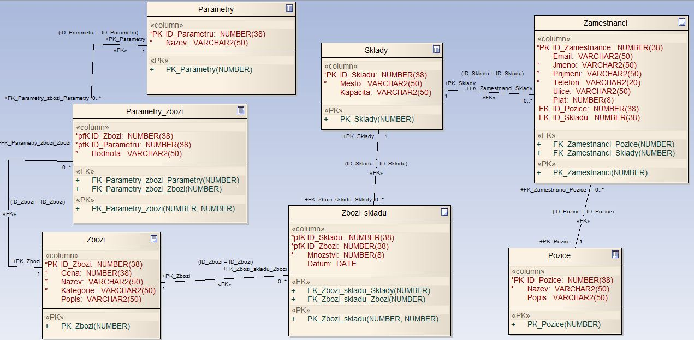

Evidence zboží na skladě - projekt DORDB
Autor: Martin Chaloupka
Na celém projektu jsem pracoval samostatně.
1. E-R diagram

2. Slovní popis dodatečných integritních omezení
2.1. Triviální integritiní omezení
- Tabulka Parametry
- Atribut Nazev nesmí být null hodnota.
- Tabulka Parametry_zbozi
- Atribut Hodnota nesmí být null hodnota.
- Tabulka Zbozi
- Atribut Cena nesmí být záporná nebo null hodnota.
- Atribut Nazev nesmí být null hodnota.
- Atribut Kategorie nesmí být null hodnota.
- Tabulka Zbozi_skladu
- Atribut Mnozstvi nesmí být záporná nebo null hodnota.
- Tabulka Sklady
- Atribut Mesto nesmí být null hodnota.
- Tabulka Zamestnanci
- Atribut Jmeno nesmí být null hodnota.
- Atribut Prijmeni nesmí být null hodnota.
- Atribut Telefon nesmí být null hodnota.
- Atribut Plat nesmí být záporná hodnota.
- Tabulka Pozice
- Atribut Nazev nesmí být null hodnota.
2.1. Netriviální integritní omezení
- Tabulka Parametry_zbozi
- Pro jedno zboží by nemělo existovat více stejných parametrů.
- Tabulka Zbozi_skladu
- Jedno zboží by nemělo být na daném skladě registrováno vícekrát.
3. Slovní návrh API rozhraní „business logiky“
Přidání parametrů zboží
Název: pridej_parametr_zbozi
Parametry: ID_Zbozi, ID_Parametru, Hodnota
Popis: Vytvoří se záznam do tabulky Parametry_zbozi, to spustí trigger pro kontrolu zda dané zboží již neobsahuje stejný parametr a pokud bude vše v pořádku, tak dané zboží sváže s parametrem v databázi.
Vložení zboží na sklad
Název: vloz_zbozi_skladu
Parametry: ID_Zbozi, ID_Skladu, Mnozstvi
Popis: Procedura zkontroluje zda na daném skladu již není dané zboží. Pokud kontrola projde, procedura vytvoří nový záznam v tabulce Zbozi_skladu. Sklad sváže se zbožím v databázi. Atribut Datum je systémový čas vložení záznamu.
Úprava množství zboží na skladě
Název: mnozstvi_zbozi_skladu
Parametry: ID_Zbozi, ID_Skladu, Number(8) Zmena_Mnozstvi
Popis: Procedura načte záznam z tabulky Zbozi_skladu. Pokud nebude Mnozstvi záporné číslo, tak procedura přidá/odebere Zmena_Mnozstvi a přepíše Datum na aktuální systémový čas.
Přidání zaměstnance
Název: pridej_zamestnance
Parametry: Email, Jmeno, Prijmeni, Telefon, Ulice, Plat, ID_Pozice, ID_Skladu
Popis: Procedura sváže zaměstnance s názvem pozice. Pokud by zaměstnanec přejížděl mezi více sklady nebo byl na pozici vyšší manažer, tak ID_skladu může být null, nebo se nastaví na sklad, kde má zaměstnanec oficiální kancelář.
4. Pět slovně formulovaných dotazů nad schématem
- Všechny zaměstnanci pracující v Hradci Králové.
- Platový průměr všech zaměstnanců.
+ Všechny zaměstnance a pozici s větším než průměrným platem
+ Počet zaměstnanců s většším než průměrným platem
- Zboží, které je nejvícekrát ve skladu v Hradci Králové.
- Celková cena zboží ve skladu v Hradci Králové.
+ Celková cena zboží z každého skladu
+ Počet skladů ve kterých není žádné zboží
- Zboží s nejvíce parametrama.
5. Skript, který vytvoří databázové schéma odpovídající E-R diagramu
Skript: 05_db_schema.txt
6. Skript, který vytvoří v databázovém schématu dodatečná integritní omezení
Skript: 06_integritni_omezeni_z_bodu_2.txt
7. Skript, který naplní tabulky testovacími daty
Skript: 07_testovaci_data.txt
8. Skript, který provede postupně všechny navržené dotazy z bodu 4
Skript: 08_dotazy_z_bodu_4.txt
Výsledky s exekučním plánem: 08_vysledky_dotazu.txt
Shrnutí: Optimalizace není nutná, vzhledem k časům zpracování všech dotazů
9. Skript, který se pokusí porušit všechna dodatečná integritní omezení
Skript: 09_poruseni_omezeni.txt
Výstup: 09_vystup.txt
10. Skript pro vytvoření balíku (package) a procedur „business logiky“
Skript: 10_balik_a_procedury
11. Ověření procedur „business logiky“
Skript: 11_testovaci_skript_procedur.txt
Výstupy: 11_vystup.txt
12. Skript, který doplní do tabulky automaticky dopočítávaný sloupec
Skript: 12_odvozene_hodnoty.txt
13. Skript, který vytvoří úložiště ještě jednou v „objektové“ podobě
Skript: 13_objektova_podoba.txt
14. Skript, který provede pět dotazů znovu, nad objektovými tabulkami
Skript: 14_objektove_dotazy_z_bodu_4.txt
Výstup: 14_vystup.txt
15. Navrhněte slovně fakta a dimenze pro datový sklad
Tabulka faktů: Mesto, Cena, Kategorie, Parametry
Tabulka dimenzí: Sklady, Zboží
Možné analýzy: Jaký druh zboží se odebírá ve vybraném městě? Mělo by smysl rozšířit sklad nebo objednat více zboží? Odebírá se zboží s lepšími parametry? Má množství parametrů vliv na větší odběr zboží? Jaké kategorie zboží se nejvíce/nejméně vyhledávají na daném skladu? Jak velký cenový rozdíl donutí klienty pro objednání substitučního zboží?
Skript pro vyčištění databáze
Skript: drop.txt
{kind=link}